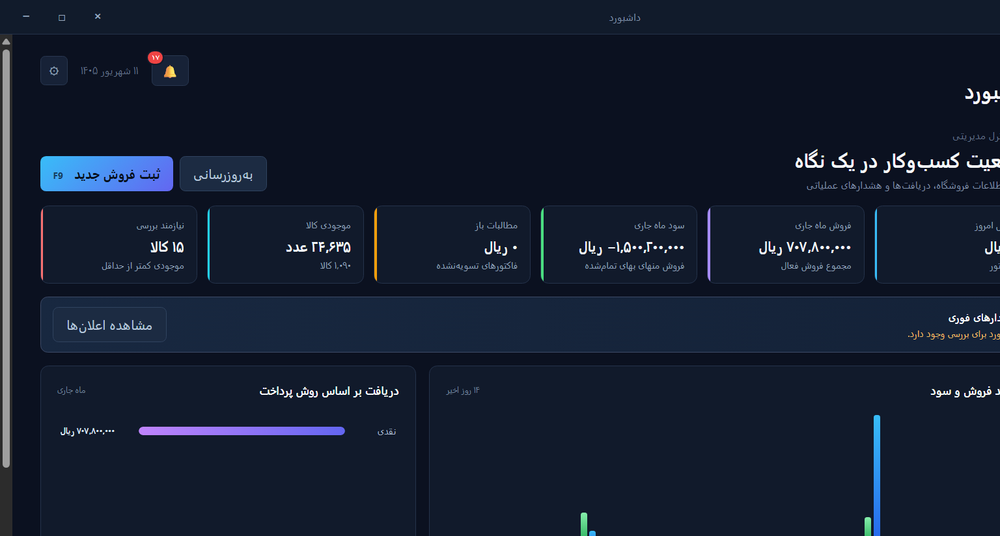

گزارشهای مدیریتی
فروش، سود و زیان و وضعیت کسبوکار را در یک نگاه ببینید و تصمیم دقیقتری بگیرید.
از ثبت فروش و کنترل موجودی تا حساب مشتریها و گزارش سود و زیان؛ همهچیز در یک نرمافزار فارسی، سریع و کاملاً آفلاین.

اکلترون برای جریان واقعی کار یک فروشگاه ساخته شده؛ ساده برای شروع و قدرتمند برای مدیریت دقیق.
فروش، سود و زیان و وضعیت کسبوکار را در یک نگاه ببینید و تصمیم دقیقتری بگیرید.
ثبت سریع خرید و فروش، تخفیف، مالیات، تسویه و چاپ فاکتور حرفهای.
کنترل لحظهای کالاها، هشدار موجودی کم و ثبت دقیق گردش انبار.
مدیریت طرفحسابها، بدهکاری و بستانکاری و مشاهده ریز گردش حساب.
ثبت دریافت و پرداخت، چکها، اقساط و هزینههای روزمره در یک محل.
ذخیره محلی اطلاعات، پشتیبانگیری آسان و ثبت فعالیت کاربران.
رابط کاربری فارسی و راستچین اکلترون، کارهای پرتکرار را جلوی دست شما میگذارد تا زمان کمتری صرف نرمافزار و زمان بیشتری صرف کسبوکارتان کنید.
اکلترون برای کار روزانه به اینترنت نیاز ندارد. دادهها روی رایانه شما ذخیره میشوند و هر زمان بخواهید میتوانید نسخه پشتیبان تهیه کنید.
خیر. تمام امکانات اصلی اکلترون بهصورت آفلاین کار میکند و اطلاعات روی رایانه خودتان ذخیره میشود.
دادهها در پایگاه داده محلی نگهداری میشوند. همچنین میتوانید در هر زمان نسخه پشتیبان تهیه و در محل امن نگهداری کنید.
برای فروشگاهها و کسبوکارهای کوچک و متوسطی که به فروش، خرید، انبار، طرفحساب و گزارش مالی نیاز دارند.
بله. اکلترون از خروجی CSV سازگار با Excel و چاپ یا خروجی PDF برای اسناد پشتیبانی میکند.
اکلترون را دریافت کنید و مدیریت یکپارچه فروشگاهتان را همین امروز شروع کنید.